Why patterns?
Polygons are usually filled with a color. A fill pattern, such as hatching or dots, can be drawn on top of that color. Patterns are useful:
- to show a second variable on top of a color, e.g. the uncertainty of an estimate;
- for maps that are printed in black and white;
- for accessibility, since patterns do not depend on color vision.
In tmap, the pattern is a map variable, just like fill and col. It can be a constant value, or it can be mapped to a data variable with a scale and a legend.
A constant pattern
tm_shape(World) +
tm_polygons("HPI", pattern = "hatch")
#> [tip] Consider a suitable map projection, e.g. by adding `+ tm_crs("auto")`.
#> This message is displayed once per session.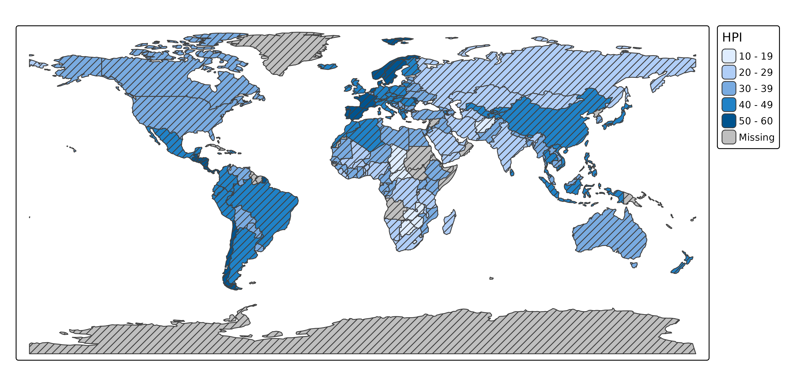
Patterns by a data variable
When pattern is a data variable, each category gets its own pattern. The patterns are drawn on top of the fill color, so color stays free for another variable.
tm_shape(World) +
tm_polygons("HPI", pattern = "economy")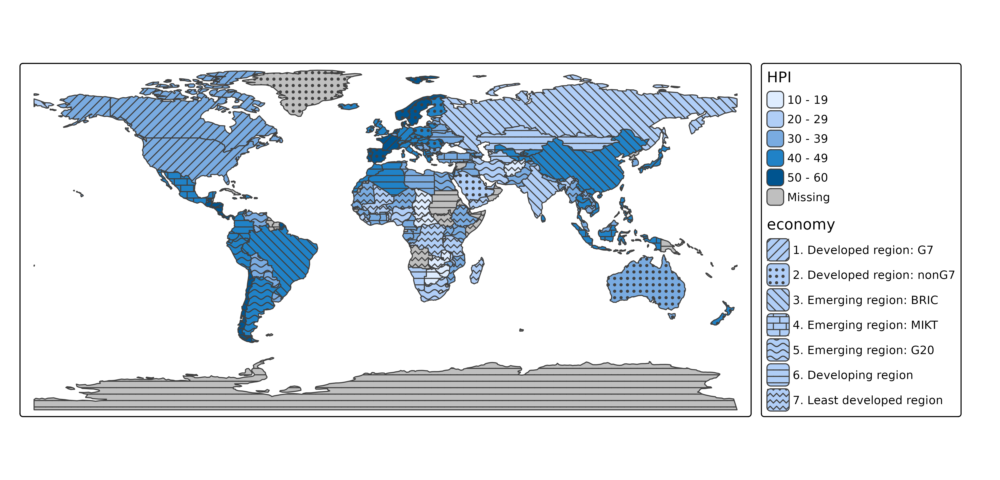
Available patterns
The available pattern types and shortcuts are shown with tmap_show_values():
tmap_show_values("pattern")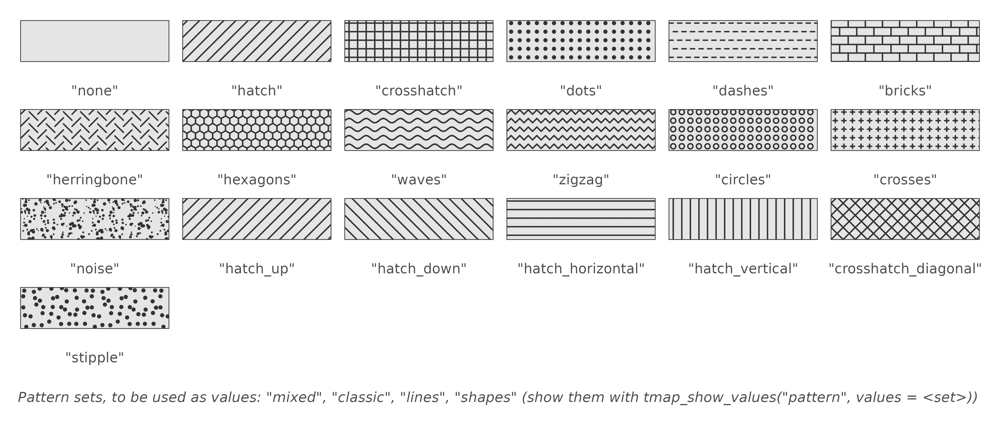
Patterns are specified as pattern types (e.g. "hatch") or shortcuts (e.g. "hatch_down"). For more control, use tm_patterns(), which has parameters for the angle of the motif, the randomness of the dots, and the length and amplitude of the motif elements:
tm_patterns("hatch", angle = c(30, 60))
#> [1] "hatch(angle=30)" "hatch(angle=60)"
tm_patterns("bricks", length = 3)
#> [1] "bricks(angle=0,length=3)"Pattern sets
Like color palettes, there are pattern sets, which are used as values of a scale:
| Set | Patterns |
|---|---|
"mixed" (default) |
14: hatch, dots, hatch_down, bricks, waves, hatch_horizontal, … |
"classic" |
8: hatches in four directions, crosshatches, dots, dashes |
"lines" |
10: hatches, waves, zigzag lines, dashes, herringbone, crosshatches |
"shapes" |
6: dots, bricks, circles, hexagons, crosses, noise |
The first patterns of a set are used. The patterns in a set are ordered such that neighboring patterns differ in motif, and not only in orientation: an orientation of hatching alone is a weak way to distinguish areas. The patterns of the sets, in this order, are shown with tmap_show_values():
tmap_show_values("pattern", values = c("mixed", "classic", "lines", "shapes"))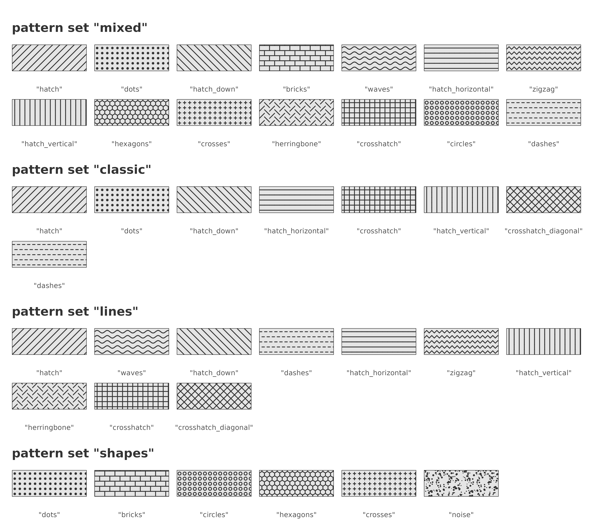
tm_shape(World) +
tm_polygons("HPI", pattern = "economy",
pattern.scale = tm_scale_categorical(values = "classic"))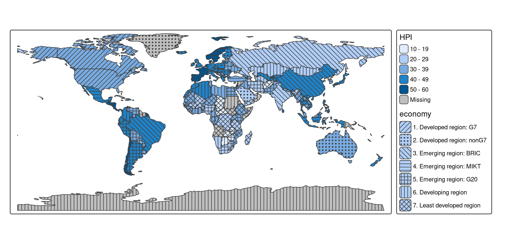
Patterns can also be specified per category, as a character vector, as a list of tm_patterns() calls, or with one vectorized tm_patterns() call:
hatches = tm_patterns("hatch", angle = c(0, 30, 60, 90, 120))
tm_shape(World) +
tm_polygons("HPI", pattern = "income_grp",
pattern.scale = tm_scale_categorical(values = hatches))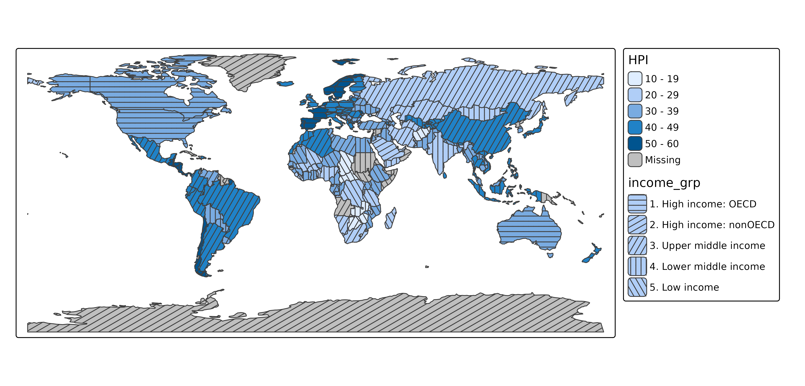
Color, size, and density
Besides pattern, there are three map variables for patterns:
| Map variable | Description | Default |
|---|---|---|
pattern_col |
color of the pattern | the polygon border color |
pattern_size |
line width, or the size of dots | 1 |
pattern_density |
density of the pattern elements, from 0 (no pattern) to 1 | 0.8 |
At density 1, pattern elements are a quarter of a text line apart. All three can be constant values or data variables. With pattern_col = "auto", the pattern color is dark gray or white, whichever contrasts most with the fill color:
tm_shape(World) +
tm_polygons("HPI", fill.scale = tm_scale_intervals(values = "brewer.blues"),
pattern = "economy", pattern_col = "auto")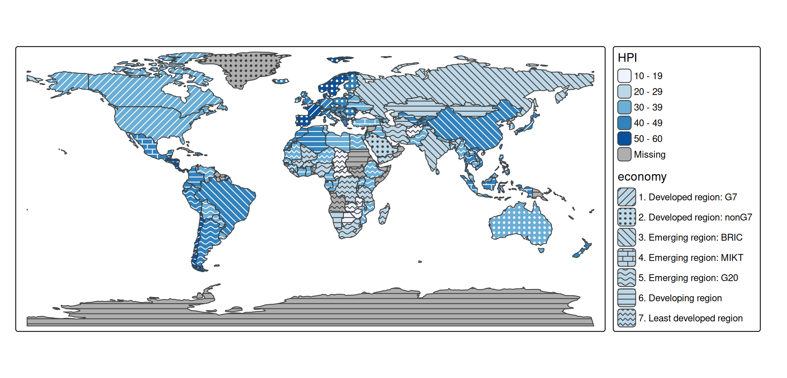
Example: two categorical variables
Patterns are especially suited for categorical variables, since pattern motifs have no natural order. With a color for one categorical variable and a pattern for another, two categorical variables can be shown in one map:
other = c("Antarctica", "Seven seas (open ocean)")
World2 = World[!(World$continent %in% other), ]
World2$continent = droplevels(World2$continent)
tm_shape(World2, crs = "+proj=eqearth") +
tm_polygons(fill = "continent",
fill.legend = tm_legend("Continent"),
pattern = "income_grp",
pattern.legend = tm_legend("Income group"))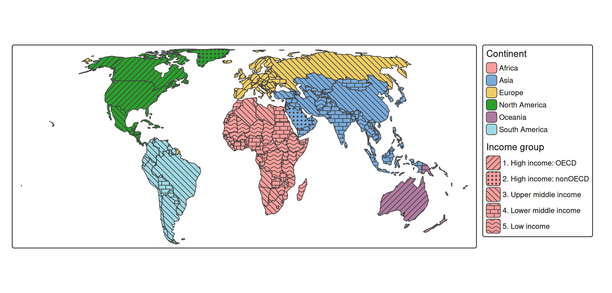
Note that the income groups are ordered, whereas the patterns are not: the legend is needed to see which group is higher. For an ordered variable, the density of a single pattern (pattern_density) conveys the order better; see the dot density example below.
Example: reliability of estimates
A typical use case is a map of estimates, where the estimates that are less reliable are marked with a pattern. Statistical agencies often do this for small areas, where an estimate is based on few observations. In this example, the share of high incomes is shown for the districts of two provinces of the Netherlands. Districts with fewer than 1000 inhabitants are hatched; for some of them, the estimate is not published at all (missing values).
north = NLD_dist[NLD_dist$province %in% c("Groningen", "Drenthe"), ]
north$reliability = cut(north$population, breaks = c(-Inf, 1000, Inf),
right = FALSE,
labels = c("Low (< 1000 inhabitants)", "Sufficient"))
tm_shape(north) +
tm_polygons(fill = "income_high",
fill.scale = tm_scale_intervals(values = "-hcl.purples3",
value.na = "grey85",
label.na = "Not published"),
fill.legend = tm_legend("High income (%)"),
pattern = "reliability",
pattern.scale = tm_scale_categorical(values = c("hatch", "none")),
pattern.legend = tm_legend("Reliability"),
pattern_col = "white",
col = "grey60", lwd = 0.5)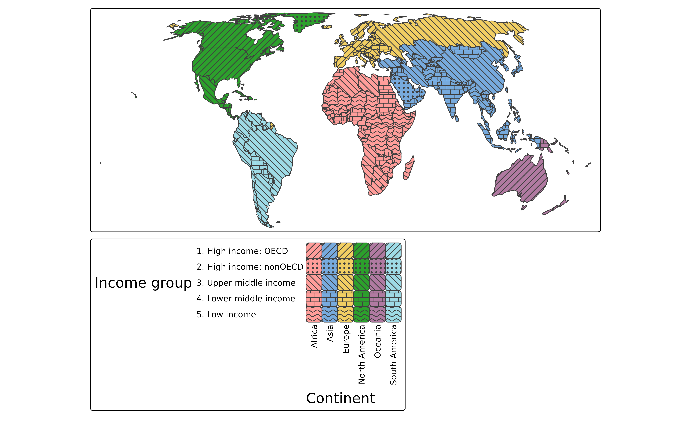
The eye averages a pattern with the fill color underneath. Dark lines make an area look darker, and white lines make it look lighter, although the fill color between the lines is unchanged. On a sequential palette, hatched areas therefore seem to have a different value than they have. This is why the reliability is shown with two classes, rather than with a pattern density that increases with the uncertainty: all hatched areas are hatched in the same way, so colors can be compared among the hatched areas, and among the other areas. Only comparisons between the two groups are biased, and the hatching makes clear which areas these are. White hatches make the colors look faded, which fits the meaning “less reliable”. A drawback is that white hatches are hardly visible on the lightest colors; with pattern_col = "auto", the hatches are dark gray on light colors instead.
Example: dot density
With the pattern "stipple" (dots that are randomly displaced from a regular grid), pattern_density can be used to make a dot density map. At density 1, there is one dot per square of a quarter text line wide. Since the spacing between dots is inversely proportional to the density, the number of dots per area is proportional to the square of the density. So, to make the number of dots proportional to a data variable, such as the population density, use a square root scale that starts at 0, with values from 0 to 1:
utrecht = NLD_dist[NLD_dist$province == "Utrecht", ]
utrecht$pop_dens = utrecht$population / as.numeric(utrecht$area)
tm_shape(utrecht) +
tm_polygons(fill = "white", col = "grey80", lwd = 0.5,
pattern = "stipple", pattern_size = 1.2, pattern_col = "grey10",
pattern_density = "pop_dens",
pattern_density.scale = tm_scale_continuous_sqrt(
limits = c(0, 10000), values = c(0, 1),
ticks = c(500, 2500, 5000, 10000)),
pattern_density.legend = tm_legend("Inhabitants per km2"))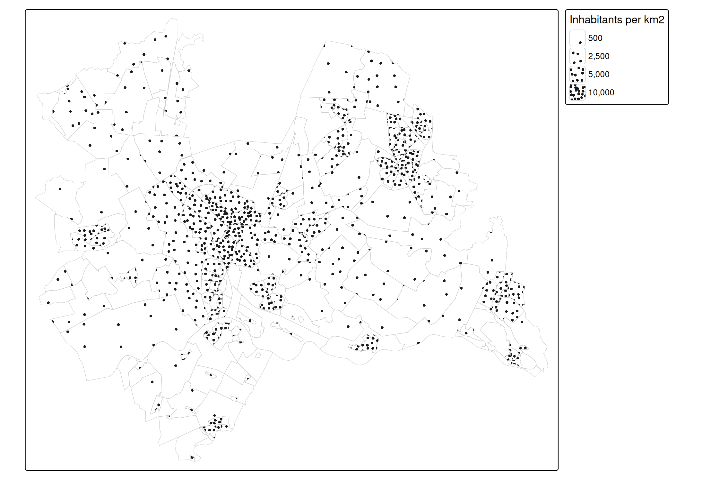
Each dot represents the same number of inhabitants: the upper limit (here 10,000 inhabitants per km2) times the map area of one dot square at density 1. The side of this square is a quarter of a text line, which is 0.05 inch times the scale (see tm_layout()); in the map above, with scale 0.75, it is 0.0375 inch. So the number of inhabitants per dot depends on the map scale, and therefore on the size of the plot. Note that the dots are spread evenly within each district: they do not show where people live within a district.
Black and white maps
For a black and white map, use a white or light gray fill color:
tm_shape(World) +
tm_polygons(fill = "white", pattern = "economy",
pattern.scale = tm_scale_categorical(values = "classic"))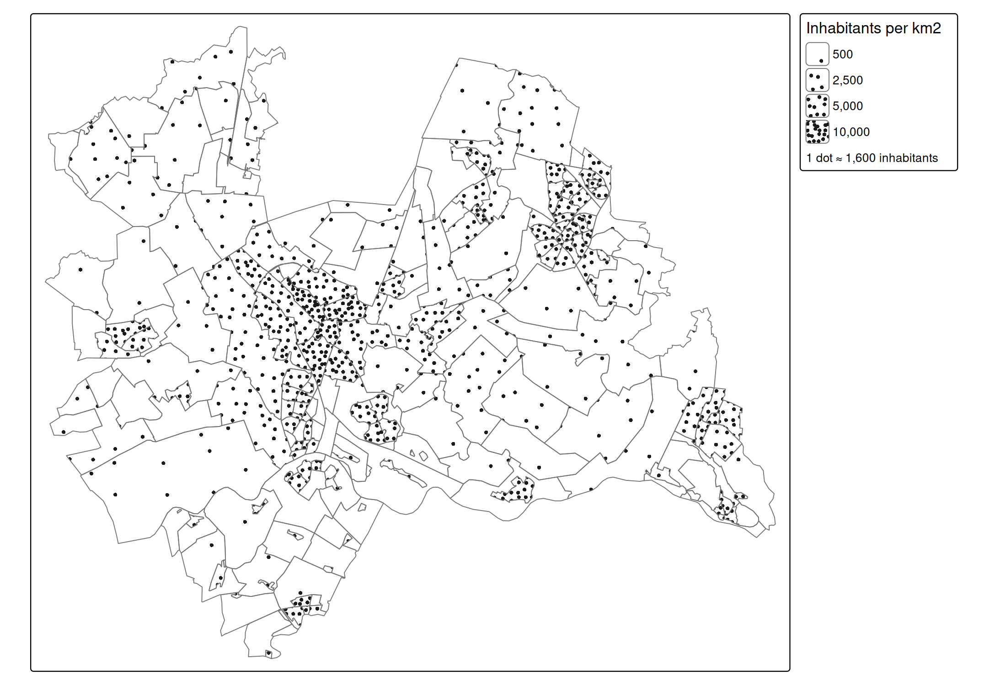
Legends
Legend items of pattern legends are larger than the default legend items, so that the pattern is visible. The pattern in the legend has the same density and line width as on the map. The size of legend items can be changed with item.height and item.width in tm_legend(). When the same data variable is used for fill and pattern, the legends can be combined with tm_legend_combine():
tm_shape(World) +
tm_polygons("economy", pattern = "economy",
pattern.legend = tm_legend_combine("fill"))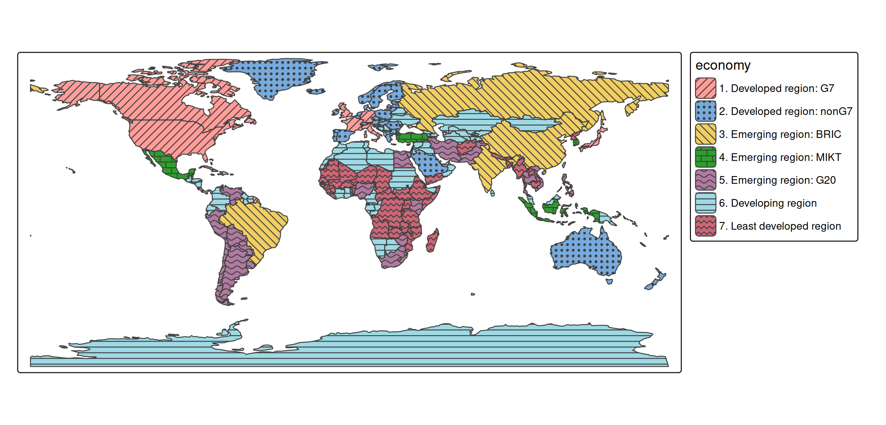
View mode
In view mode, patterns keep the same size on the screen when zooming, like the symbols of tm_bubbles(). With opt_tm_polygons(pattern.zoom = TRUE), patterns stick to the map instead, and are enlarged when zooming in, like the circles of tm_circles(). The patterns in the legend are zoomed as well, so that they keep matching the map (when zoomed in far, the legend items may be too small to show the pattern):
tmap_mode("view")
tm_shape(World) +
tm_polygons("HPI", pattern = "economy",
options = opt_tm_polygons(pattern.zoom = TRUE))Notes
- In plot mode, patterns require a graphics device that supports clipping paths (R >= 4.1), such as
png(),pdf(), andsvg(). - Higher densities take longer to draw, since there are more pattern elements.
- Patterns are currently available for polygons (
tm_polygons()andtm_fill()). -
tmap_show_values()also shows the available values of the other categorical map variables: symbol shapes ("shape"), line types ("lty"), and font faces ("fontface").